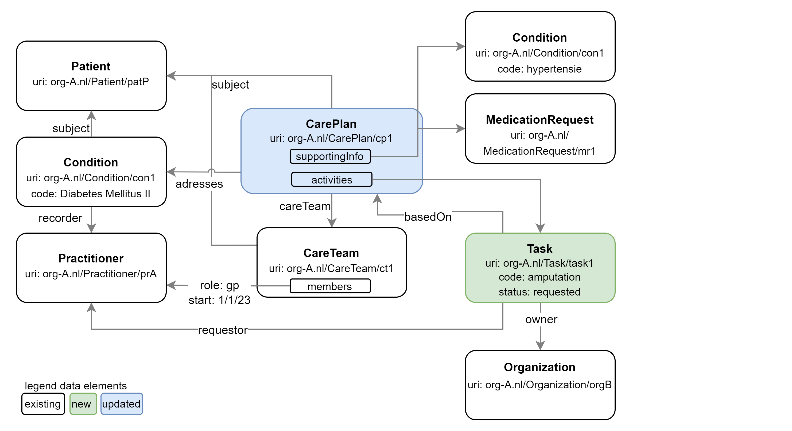

Shared Care Planning (SCP) Implementation Guide
0.1.0 - ci-build
Shared Care Planning (SCP) Implementation Guide - Local Development build (v0.1.0) built by the FHIR (HL7® FHIR® Standard) Build Tools. See the Directory of published versions
Shared Care Planning (SCP) provides the structures and transactions for care planning, collaboration between practitioners by cross-organizational ordering processes and localization and authorization of members involved in the careteam of a patient. Improved collaboration between different types of care providers (e.g. GP, homecare or hospitals) should improve efficiency in hybrid or network-care settings. It should lower the administrative burden for practitioners without having to switch to auxillary collaboration-systems.
SCP builds upon the IHE ‘Dynamic Care Planning’ profile (IHE-DCP). It is extended by generic, FHIR workflow patterns for cross-organizational requests or orders. An authorization model will also be provided so that members in a distributed careteam will, e.g., be able to read patient-data from other organizations and/or will be able to plan new activities.
This IG uses several concepts from the FHIR R4 specifications.
In the transactions sections, this IG will use the basic concepts on RESTful interaction with a FHIR API; e.g. read, search, update, create and delete interactions
[!IMPORTANT] To avoid losing data during update, actors MUST support the directives in transactional integrity and concurrency
This IG will use and specify a workflow pattern. For general FHIR workflow concepts, see: https://hl7.org/fhir/R4/workflow.html The base pattern that will be used is the https://hl7.org/fhir/R4/workflow-management.html#optionh
The IG is referring to many FHIR resource types. Key resource types for SCP:
The FHIR CarePlan resource is a framework for documenting and managing healthcare interventions and goals. It ensures that all relevant information is available to all stakeholders, promoting coordinated and effective care delivery. Key elements of a CarePlan for SCP:
For SCP, CarePlan will be validated using this profile. For more information, check the FHIR R4 CarePlan documentation
The CareTeam resource includes all people and organizations who are participating or have participated in the care process for a patient. Key elements of a CareTeam for SCP:
The Task resource describes an activity that can be performed, is being performed, or has been performed. It is used to manage and track the status of tasks, participants and definition of the Task. A Task in SCP is always related (‘basedOn’) the CarePlan. When a party is request to ‘do’ a Task, that organizations that may not be part of the CareTeam yet. Personally Identifiable Information SHOULD be left out of the Task content until the Task is accepted by the organization responsible for the Task. Key elements of a Task for SCP:
SCP uses some base FHIR resource types for entities. These entities are referenced in the CarePlan, CareTeam or Task.
For the planning or coordination of care, healthcare professionals should be able to get into contact with each other. The CareTeam-members could, for instance, plan a Multi Disciplinary Team-meeting to discuss the condition of the patient. How to organize these meetings is out of scope for SCP. The identifiers for Patient, RelatedPerson, Practitioner and Organization are used for authentication and authorization. The key element for these entity-resources are:
The FHIR AuditEvent resource is used for logging of events that record activities related to the use or manipulation of data. Members of the CareTeam in a CarePlan are authorized to access and manipulate data. Therefore the transactions that lead to adding or changing CareTeam-members is recorded in AuditEvents. For more information, check the FHIR R4 AuditEvent documentation.
The FHIR PlanDefinition and ActivityDefinition resource provides a detailed, reusable template for defining various healthcare-related activities. It ensures that standardized actions, treatments, and procedures can be clearly described and referenced across different healthcare systems, promoting consistency and quality in care delivery. Using the $apply operation healthcare organizations are able instantiate a CarePlan or request (referred to in Task.focus) in a consistent way. For more information, check the FHIR R4 PlanDefinition, ActivityDefinition documentation.
There are three actors in this Implementation Guide: The Care Plan User, Care Plan Contributor and Care Plan Service.
The first actor is the Care Plan User (CP-User). It is an application/client rol that is acting on behalf of a real practitioner, patient or related person. This actor interacts with both the Care Plan Contributor(s) and the Care Plan Service. This actor creates and updates the care plan and tasks/orders for other (future) Care Plan Contributors. The CP-User may also get data from the other Care Plan Contributor(s); CP-User will query the Care Plan service for the CarePlan and CareTeam-data to find at which organizations (or endpoints) other data could be reside. Every SCP-transaction is initiated or trigged by a Care Plan User, so any manipulation of data can be led back to a Care Plan User or responsible person.
TODO: FHIR capabilitystatement (example) (mode=client):
The second actor is the Care Plan Contributor (CP-Contributor). The main responsibilities of a CP-Contributor is to respond to an incoming Task-requests or Task-updates and to authorize other CP-Users to query local data.
TODO: FHIR capabilitystatement (mode=client):
TODO: FHIR capabilitystatement (example) (mode=server):
The third actor is the Care Plan Service. This actor manages (hosts) patient specific Care Plans, Tasks and Care Teams. The Care Plan Service is also responsible for updating several elements in Care Plans and Care Teams that authorize new persons or practitioners in the Care Team. Optionally, this actor also manages (hosts) Plan Definitions and Activity Definitions that are used for order sets, protocols, clinical practice guidelines, etc.
TODO: FHIR capabilitystatement (mode=client):
TODO: FHIR capabilitystatement (mode=server):
TODO/Roadmap:
Data push or data pull of Personally Identifiable Information (PII) should always be initiated by a Practitioner; should be auditable who has done stuff.
Refer to Trust-over-IP or ARF or something
Authorization; based on conditions, task-type, careteam-member-status (active/inactive) and/or role Member(-status) in the CareTeam are only updated by the CPS after ‘agreement’ on a Task in the CarePlan.
There are three transactions in SCP:
use Orca and you’ll be fine.
The image below displays the schematic overview of the topics.
Legenda
TODO Review text: In bovenstaande specificatie beschrijft een implementatie van het IHE DCP profiel. Deze specificatie breidt het IHE profile uit met de data die binnen werkprocessen (en tussen organisaties) ontstaat en de afgeleide, functionele autorisatie voor deze data. Uiteraard zijn er andere standaarden binnen de zorg die een overlap hebben met deze specificatie. Bij het opstellen van deze specificatie is getracht om zo veel mogelijk deze bestaande standaarden te hergebruiken.

This specification has copied many of the concepts used in IHE DCP. However…. describe difference
[TODO: beschrijving overeenkomsten en verschillen met eOverdracht standaard]
[TODO: beschrijving overeenkomsten en verschillen met Koppeltaal 2.0 standaard]
[TODO: beschrijving overeenkomsten en verschillen met TA NP standaard]